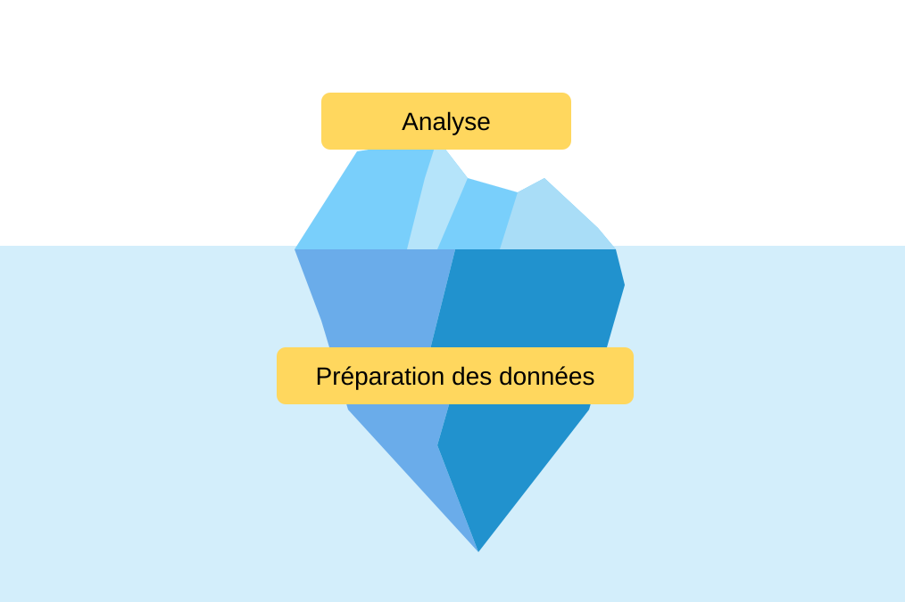
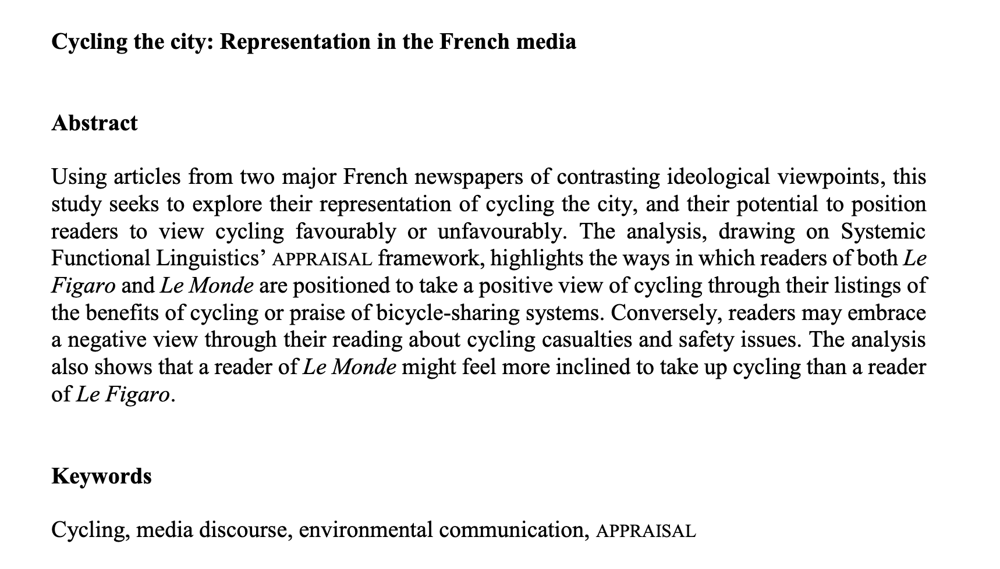
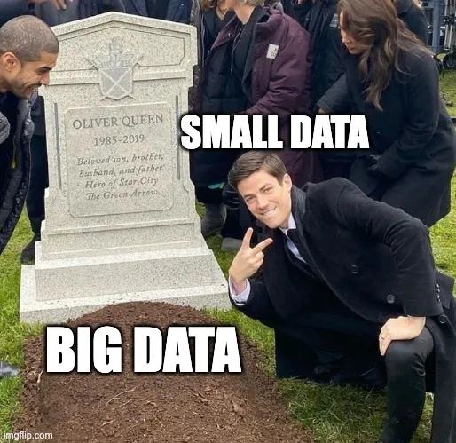
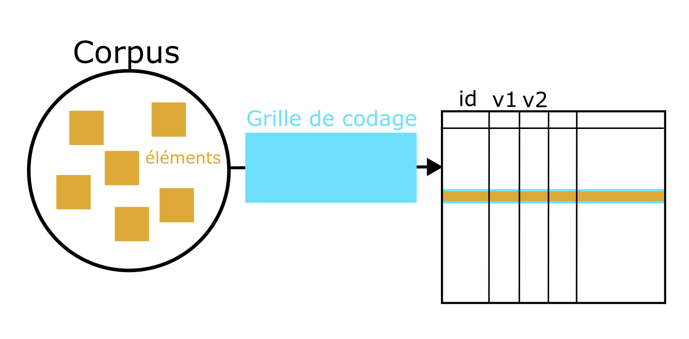
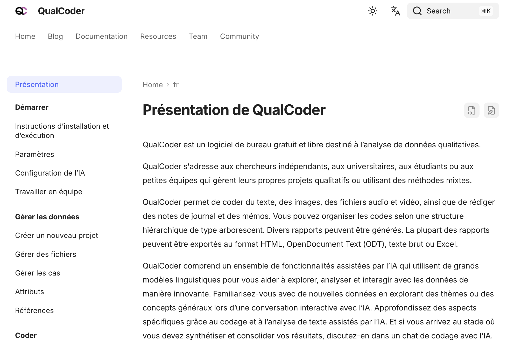
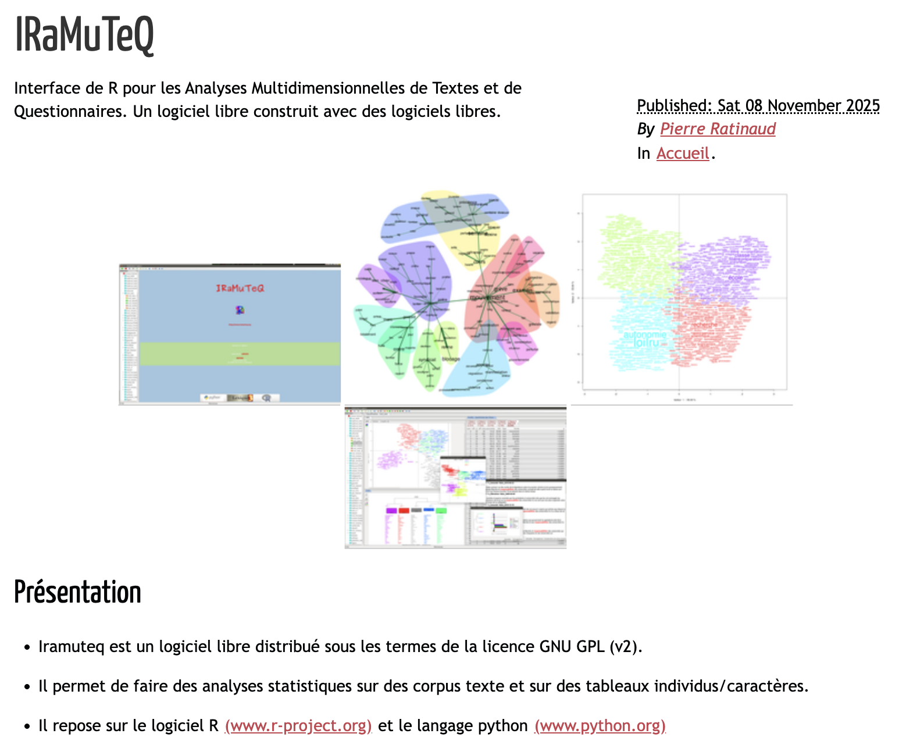
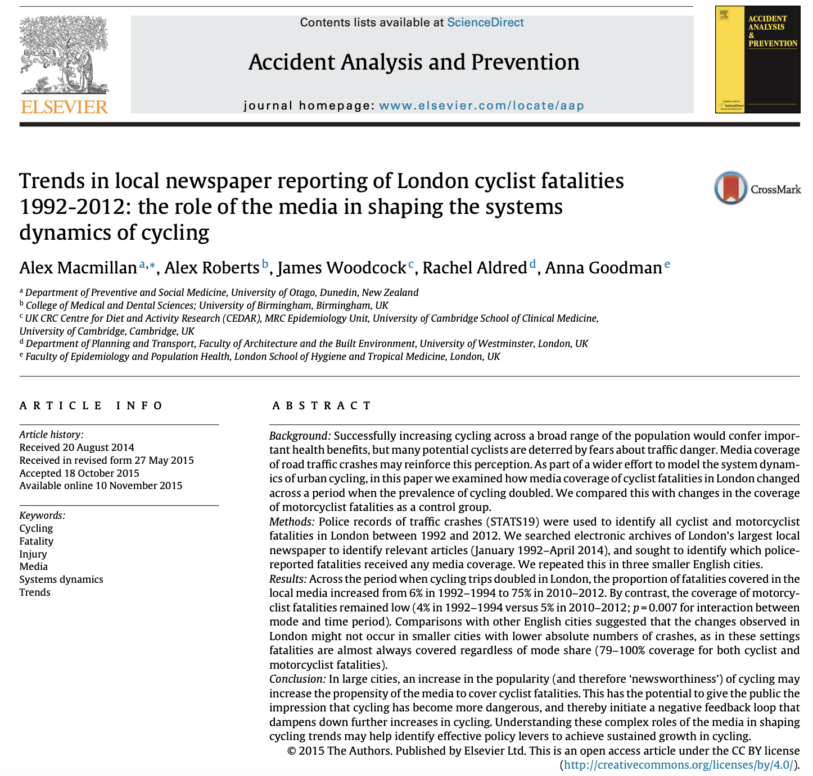

Analyser des données
Des données aux résultats
Objectifs de la séance
- Constituer et décrire un corpus
- Qu’est-ce qu’analyser ? Méthodes et outils
- Trois approches
- Coder des articles avec un tableur
- Coder des entretiens avec un CAQDAS (QualCoder)
- Faire parler le vocabulaire avec Iramuteq
Petit point d’étape
- Avez-vous identifié des données ?
- Rendus intermédiaires
- Au moins un jeu de données et une méthode d’analyse
- Le lien entre les deux : quelle question, quelle analyse ?
Nous y revenons en fin de séance avec une consigne précise
Constituer et décrire un corpus
Centralité des données dans le processus

Le travail des données est un travail d’analyse
Une partie de l’analyse se joue au niveau des données
- Constituer/filtrer le corpus : que garde-t-on ?
- Transformer les données
- Recoder (ex. uniformiser les noms de journaux)
- Compléter (ex. ajouter une date, un lieu)
- Fusionner (ex. plusieurs exports)
- Supprimer (ex. doublons, hors sujet)
Chacun de ces choix est déjà un choix d’analyse : il faut les noter
Un exemple : représentation du vélo en France

Adapter cette analyse à Paris
- Quelle période ?
- Quels mots-clés utiliser ?
- Quels journaux privilégier ?
En pratique, les étapes
- Identifier et accéder aux données
- Collecter les données
- Stocker et archiver les données brutes (jamais modifiées)
- Transformer en données intermédiaires utilisables
- Documenter chaque étape (un fichier texte suffit)
Construire le corpus sur Europresse
- Définir le périmètre
- Ex.
TEXT = (cycliste | vélo) & TEXT= paris
- Ex.
- Récupérer : exporter en HTML
- Conserver : nommer le fichier avec la date et la requête
Petit rappel

Trente articles bien compris valent mieux que trois mille mal connus ; ne jamais hésiter à cibler
Décrire le corpus : la première analyse
Avant toute question, savoir ce que l’on a :
- Combien d’articles ?
- Quels journaux, et combien chacun ?
- Quelle période, quelle répartition dans le temps ?
Pour transformer l’export HTML en tableau : dstool
Décrire les processus dans la méthodologie

Ecrire sa méthodologie
Pour votre corpus, indiquer :
- La source et la requête exacte (date de l’extraction)
- Les critères d’inclusion et d’exclusion
- Les effectifs finaux (par journal, par période)
- Les transformations effectuées
- Les limites connues (accès captif, doublons, articles tronqués…)
Un idéal régulateur : la reproductibilité
Etre capable de refaire le plus simplement possible toutes les étapes (souvent très itératives) entre l’idée et les résultats

Concrètement, pour vous
- Un dossier par projet, avec
brut/,travail/,resultats/ - Les données brutes ne sont jamais modifiées
- Un journal de bord : date, ce qui a été fait, pourquoi
- Les fichiers nommés par date et contenu, pas
final_v3_ok.xlsx
Qu’est-ce qu’analyser ? Méthodes et outils
Analyser, c’est quoi ?
Passer de données à des résultats qui répondent à une question
- Décrire : combien, quand, où, qui (comptages, distributions)
- Regrouper : agréger à différents niveaux
- Comparer : entre journaux, entre périodes, entre acteurs
- Modéliser : identifier des tendances
Toute analyse réduit l’information : c’est son intérêt et sa limite
De la question à l’opération
Une question n’est pas directement analysable : il faut la traduire
C’est cette traduction, l’opérationnalisation, qui est le cœur du travail
| Question | Opération concrète |
|---|---|
| Le propos est-il politisé ? | Repérer dans chaque article les acteurs politiques cités |
| Qui est mis en avant ? | Classer chaque article selon le cadrage |
| Les journaux en parlent-ils pareil ? | Comparer le vocabulaire par journal |
Distinguer méthodes et outils
Données + traitements → résultats
- Un traitement : une méthode, descriptible indépendamment de tout logiciel
- Un outil : un logiciel qui permet de mettre en œuvre la méthode
Un même traitement, plusieurs outils : coder thématiquement des articles peut se faire avec un surligneur, un tableur, QualCoder ou un script Python
Un même outil, plusieurs traitements : un tableur sert à coder, à compter, à faire des graphiques, à gérer une bibliographie
Pourquoi cette distinction compte
- Dans un travail, on décrit la méthode et l’outil
- La méthode est liée à la conceptualisation
- L’outil est lié à la condition de réalisation
Choisir d’abord la méthode, ensuite l’outil (et pas l’inverse)
Des logiciels pour l’analyse : quatre philosophies
| Philosophie | Principe | Exemple aujourd’hui |
|---|---|---|
| Générique | Un outil à tout faire, la méthode vient de vous | Tableur |
| Métier | Une boîte à outils pour une famille de pratiques | QualCoder (CAQDAS) |
| Spécialisé | Quelques traitements précis, très encadrés | Iramuteq |
| Programmation | Formaliser chaque étape par du code | Python, R |
Plus on va vers le bas, plus c’est reproductible, et plus c’est long à apprendre
De nombreux outils à votre disposition
Privilégier les outils open source
- Tableurs (LibreOffice, Google Sheets, Excel) : organiser, coder, compter
- Jamovi : statistiques
- QualCoder : annoter des textes (entretiens, articles)
- Iramuteq : lexicométrie
- Magrit ou Khartis : réaliser des cartes
- VOSviewer : cartographie de données scientométriques
- Gephi : analyse de réseaux
- Python ou R : scripts
Des sessions studio sur plusieurs d’entre eux
Et l’IA générative ?
- Un outil, pas une méthode : ChatGPT ne sait pas quelle question vous posez
- Utile pour : reformuler une grille, suggérer des catégories, annoter en volume
- Risqué pour : coder à votre place sans règles explicites, inventer des régularités
- Dans tous les cas : vérifier sur un échantillon, documenter l’usage
Même exigence que pour tout outil : savoir ce qu’il fait aux données
Trois approches
1. Coder des articles avec un tableur
Question : comment est traité l’accident mortel impliquant le cycliste Paul Varry ?
- L’accident est-il cadré comme politique ou non ?
- Qui est considéré comme responsable ?
- Les enjeux d’urbanisme et d’aménagement sont-ils mentionnés ?
Unité d’analyse : l’article (une ligne = un article)
Passer des articles à un tableau

La grille de codage
Chaque question devient une variable avec des modalités et une règle
| Variable | Modalités | Règle d’application | Exemple |
|---|---|---|---|
| cadrage | politique / fait divers / mixte | Politique si un élu ou une politique publique est cité | “La maire a réagi…” → politique |
| responsable | cycliste / conducteur / infrastructure / non dit | Ce que l’article affirme, pas ce que vous pensez | |
| urbanisme | oui / non | Mention d’aménagement, piste, voirie |
Ajouter toujours : identifiant, journal, date, et une colonne “remarques”
Organiser le processus
- Prendre le temps de lire ses données
- Développer la grille de codage
- Cible : quelle entité annotée (article, paragraphe, phrase…)
- Codage : catégories et règles pour les appliquer
- Produire un tableau adapté
- Coder une dizaine d’articles pour tester la grille, et la corriger
- Coder l’ensemble du corpus
- Faire des comptages et des croisements
Le test de la grille : coder à deux
- Deux personnes codent les mêmes dix articles sans se concerter
- Comparer : où sont les désaccords ?
- Un désaccord n’est pas une erreur, c’est une règle manquante
- Réécrire la règle, recoder, recomparer
En groupe, c’est votre principal garde-fou
Résultat attendu
Un tableau croisé, par exemple cadrage × journal
| Journal A | Journal B | |
|---|---|---|
| Politique | … | … |
| Fait divers | … | … |
| Mixte | … | … |
- Comptages et pourcentages suffisent souvent
- Possibilité d’aller plus loin (studio Jamovi)
Forces et limites du tableur
Forces
- Flexible, connu de tous, lisible par n’importe qui
- Parfait pour des catégories fermées sur des unités entières
Limites
- Aucune discipline imposée : la rigueur vient de vous
- On perd le lien avec le texte : impossible de retrouver le passage qui justifie un code
- Difficile quand les catégories émergent en cours de route
2. Coder des passages avec un CAQDAS
Question : dans le cadre des entretiens, comment les cyclistes rencontrés parlent de la cohabitation sur la route et des moments de violence
Unité d’analyse : le passage (quelques mots à quelques phrases)
Ce qui change par rapport au tableur
| Tableur | CAQDAS | |
|---|---|---|
| Ce qu’on code | L’article entier | Des segments de texte |
| Les codes | Fixés à l’avance | Peuvent émerger, se réorganiser |
| Ce qu’on retrouve | Un comptage | Tous les extraits portant un code |
| Résultat type | Tableau croisé | Comparaison d’extraits, mémos |
Le CAQDAS garde le lien entre le code et le texte
Coder des documents qualitatifs
Identifier dans des documents des passages sur certains sujets
- Cas le plus fréquent : les entretiens. Petit rappel de la méthodologie de codage des entretiens LogiQuali
- Mais s’applique à tous les contenus (articles, textes, voire images)
- Deux logiques : codes définis à l’avance (déductif) ou construits en lisant (inductif), souvent les deux
CAQDAS : QualCoder
Les CAQDAS sont des outils informatiques dédiés à la gestion, au codage et à l’analyse de données qualitatives. QualCoder est un logiciel open source.

Démarrer avec QualCoder
- Créer un projet (un seul fichier pour tout)
- Importer les documents (un article = un document, ou un fichier texte par article)
- Créer sa grille de codes :
description_cycliste,description_conducteur, et des sous-codes (âge, profession, prénom, état…) - Annoter les textes en sélectionnant des passages
- Ecrire des mémos : ce que l’on remarque en codant
- Extraire : tous les passages d’un code, les cooccurrences, les comptages par document
En direct : QualCoder
- Importer deux entretiens
- Créer les deux codes principaux
- Coder ensemble
- Afficher tous les extraits d’un code côte à côte
Résultat attendu
- Pas d’abord des statistiques : une comparaison argumentée d’extraits
- Puis éventuellement des comptages : combien d’entretiens sur un thème
- Puis par cartégorie d’entretiens
- Des mémos qui deviennent les paragraphes de votre analyse
Forces et limites du CAQDAS
Forces
- On peut toujours remonter au texte
- Adapté aux catégories qui se construisent en lisant
- Fait pour les entretiens, les articles, les documents longs
Limites
- Demande d’apprendre le logiciel
- Codage long : pas adapté à des centaines de documents
- Le risque de se perdre dans les codes sans jamais conclure
3. Faire parler le vocabulaire : la lexicométrie
Question : quels grands thèmes structurent la couverture médiatique sur le vélo et varient-ils selon les journaux ?
Unité d’analyse : les mots et les segments de texte, pour tout le corpus d’un coup
Lexicométrie
Lexicométrie = analyser les textes comme des ensembles de mots
- Compter des occurrences
- Identifier la similarité entre des textes/des segments
- Faire apparaître des régularités à l’échelle du corpus entier
Le pari : on perd le contexte de chaque phrase, on gagne la systématicité sur tout le corpus
Iramuteq
La boite à outils de l’analyse lexicométrique (interface à R)

Préparer le corpus pour Iramuteq
Un seul fichier texte, avec une ligne d’en-tête par article :
**** *journal_lemonde *annee_2024
Texte de l'article...
**** *journal_leparisien *annee_2024
Texte de l'article suivant...- Les variables étoilées permettent les comparaisons (journal, année)
- Nettoyer : pas de caractères spéciaux dans les variables, pas d’étoiles dans le texte
- Iramuteq lemmatise : “accidents”, “accident” → accident
dstool produit ce format depuis l’export Europresse
Les analyses disponibles
| Analyse | Ce qu’elle répond |
|---|---|
| Statistiques textuelles | Quels mots, combien, longueur des textes |
| Spécificités | Quels mots sont sur-employés par un journal, une année |
| Classification (Reinert) | Quels groupes de segments se ressemblent : les thèmes |
| Analyse de similitude | Quels mots apparaissent ensemble |
Pour notre question : la classification pour les thèmes, les spécificités pour les journaux
En direct : Iramuteq
- Charger le corpus
- Statistiques textuelles : les mots les plus fréquents
- Lancer une classification
- Lire ensemble le dendrogramme
Lire une classification
- Chaque classe est un groupe de segments partageant du vocabulaire
- Pour chaque classe : les mots les plus caractéristiques, et des segments typiques
- Nommer la classe est votre travail : le logiciel ne connaît pas les thèmes
- Regarder quelles variables (journal, année) sont associées à chaque classe
- Toujours revenir aux textes : relire des segments de la classe avant de la nommer
Forces et limites de la lexicométrie
Forces
- Traite tout le corpus d’un coup, sans lecture exhaustive préalable
- Fait apparaître des structures qu’on n’aurait pas cherchées
- Comparaisons systématiques entre sous-corpus
Limites
- Il faut assez de texte (quelques dizaines d’articles au minimum)
- Les classes ne sont pas des thèmes tant qu’on ne les a pas interprétées (non supervisé)
- Un mot compté n’est pas un sens : “responsable” peut dire des choses opposées
Synthèse
Trois questions, trois outils, un même corpus
| Tableur | QualCoder | Iramuteq | |
|---|---|---|---|
| Unité | Article | Passage | Mot / segment |
| Catégories | Fixées avant | Construites en codant | Produites par le calcul |
| Lecture du corpus | Intégrale | Intégrale, attentive | Partielle, guidée |
| Résultat | Tableau croisé | Extraits comparés | Classes et spécificités |
| Taille adaptée | Dizaines à centaines | Dizaines | Centaines et plus |
| Philosophie | Générique | Métier | Spécialisé |
Ce que ça montre
- La question commande la méthode, la méthode commande l’outil
- Les trois peuvent être complémentaires : repérer des thèmes avec Iramuteq, puis coder finement avec QualCoder, puis compter avec un tableur
- Aucune ne dispense de lire
- Le choix dépend aussi de la faisabilité : temps, taille du corpus, compétences du groupe
Données & analyses
- Des bonnes pratiques génériques pour les données (documentation, conservation)
- Décrire le corpus est déjà une analyse
- Relation entre question, données, méthode et outil
- Des savoirs spécialisés nécessaires pour certaines analyses
- Équilibre à trouver entre complexité des analyses et faisabilité
Des sessions studio pour approfondir des données/logiciels spécifiques
Pour le rendu intermédiaire
Pour votre enquête, un document court qui précise :
- Un corpus décrit : source, requête ou protocole, effectifs, période
- Une question à laquelle ce corpus peut répondre
- Une méthode : l’opération concrète (coder quoi, comparer quoi)
- Un outil choisi, et pourquoi
- Un test : la méthode appliquée à une dizaine d’éléments, et ce que ça change à la grille
Aller plus loin : combiner
Possibilité de complexifier l’analyse en combinant des sources de données

Aller plus loin : trianguler
La triangulation : examiner sous plusieurs angles conceptuels, sources de données ou méthodes
Objectif : Renforcer la validité
- Observations directes + témoignages (entretiens)
- Entretiens + mesures
- Médias traditionnels + médias sociaux
- …
Comment choisir un outil ?